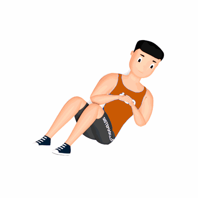

Abdominal Giro Russo

O exercício é ótimo para fortalecer os músculos oblíquos e da lombar, além dos músculos abdominais.
Ficha Técnica
Tipo: Funcional
Grupo Muscular: Abdome
Aparelho: Nenhum
Músculos: Nenhum
Como realizar
- Levante o tronco de modo que você fique quase sentado;
- Levante as pernas para que fiquem suspensas sem tocar no tapete, mantendo a sola dos pés apoiada;
- Em seguida, estique os braços completamente e entrelace os dedos;
- Você deve equilibrar a parte superior de seu tronco, sempre ficando em linha reta, de um lado primeiro, até chegar ao limite. Mantenha por dois segundos;
- Em seguida, vire para o outro lado e repita a ação. O movimento completo para ambos os lados conta como uma repetição;
 RC STORE
RC STORE